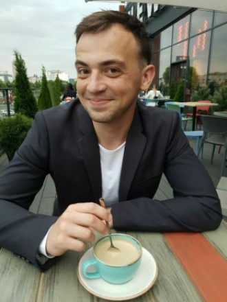

Yurii Shtupun
Date of birth: 23 March 1993
Age: 28
- Contacts:
- insta: instagram/yura.shtupun.com
- email: yura.shtupun@gmail.com
- phone number: 068 038 18 93 (viber/telegram)

Education: in 2017 graduated from Kyiv National University of Trade and Economics
specialty: state finance
Military department: National Defense University of Ukraine, 2013-2014
Additional education:
1) Coursera: HTML, CSS and JavaScript for WEB developers;
2) SoftServe academy: HTML, CSS, JavaScript Fundamentals.